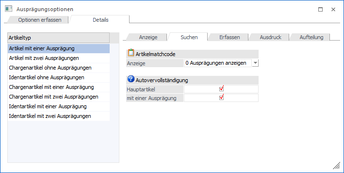
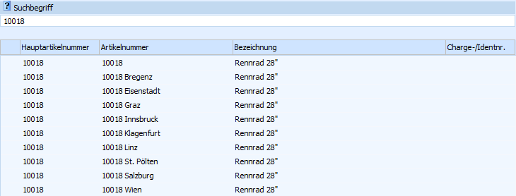
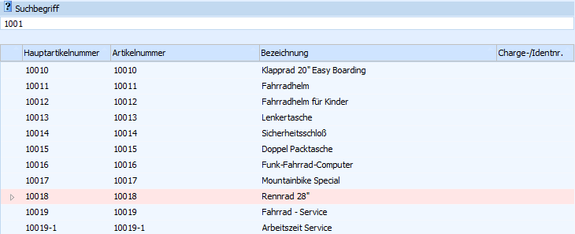
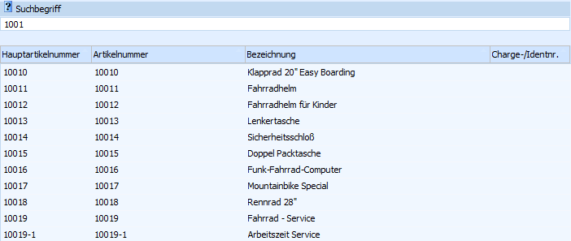
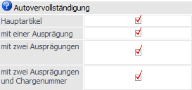

In dem Register "Suchen" kann pro Artikeltyp hinterlegt werden, wie die Ausprägungsanzeige im Artikelmatchcode erfolgen soll und welche Ausprägungstypen in der Autovervollständigung darzustellen sind.

Artikelmatchcode
Ø Anzeige
An dieser Stelle kann definiert werden, wie die Ausprägungen im Programm "Artikel Matchcode" (normale Ansicht) dargestellt werden sollen.
Hinweis
Im "Artikel Matchcode" kann jederzeit zwischen der normalen Ansicht und der erweiterten Ansicht gewechselt werden.

Achtung
Die hier gewählte Einstellung wird im erweiterten Artikelmatch (Artikel Matchcode - Register "Erw. Artikelmatch") nicht berücksichtigt.
Folgende Einstellungsmöglichkeiten stehen zur Verfügung:
ü 0 - Ausprägungen anzeigen
Im
"Artikel Matchcode" werden die Ausprägungen als normale Artikel angezeigt.
Beispiel
Bei dem Artikel "10018" handelt
es sich um einen Hauptartikel mit Ausprägungen (Lagerort).

ü 1 - Hauptartikel anzeigen und
Ausprägungen suchen
Im "Artikel Matchcode" wird der Hauptartikel angezeigt
und farblich gekennzeichnet. Die Ausprägungen werden gemäß dort getroffener
Einstellung direkt angezeigt oder können bei Bedarf mit der Taste F9 oder Anwahl
des Symbols ein- bzw.
ausgeblendet werden.
Beispiel
Bei dem Artikel "10018" handelt
es sich um einen Hauptartikel mit Ausprägungen (Lagerort).

ü 2 - nur Hauptartikel
anzeigen
Im "Artikel Matchcode" wird nur der Hauptartikel angezeigt und keine
Ausprägungen.
Hinweis
Entsprechend der Einstellung kann nach Ausprägungen (z.B. nach speziellen Chargennummer) nicht gesucht werden.
Beispiel
Bei dem Artikel "10018" handelt
es sich um einen Hauptartikel mit Ausprägungen (Lagerort).

Autovervollständigung

Ø Autovervollständigung
An dieser Stelle kann definiert werden, welche Ausprägungstypen in der Autovervollständigung dargestellt werden sollen. Je nach Artikeltyp stehen dabei unterschiedliche Einstellungen zur Verfügung.
ü mit einer Ausprägung
ü mit zwei Ausprägungen
ü mit Chargennummer
ü mit Identnummer
ü mit einer Ausprägung und Chargennummer
ü mit einer Ausprägung und Identnummer
ü mit zwei Ausprägungen und Chargennummer
ü mit zwei Ausprägungen und Identnummer